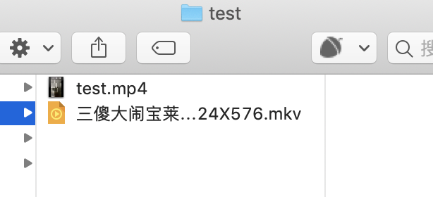

作者 | pk 哥
来源公众号 | Python知识圈（ID：PythonCircle）
最近，有读者微信上私聊我，想让我写一篇视频批量转换成音频的文章，我答应了，周末宅家里把这个小工具做出来了。
这样，对于有些视频学习文件，我们可以批量转换成音频文件，学习方式更多样化了。
之前也用过 ffmpeg 处理视频文件。ffmpeg 这个程序处理视频是好用，但是有没有更轻便的呢？可以不下载这个程序吗？
还真有，Python 里有 ffmpeg 相关的库：ffmpy3。
ffmpy3 是 ffmpy 的一个分支，它是一个简单的 FFmpeg 命令行包装程序。ffmpy 实现了一个 Pythonic 接口，用于通过命令行执行 FFmpeg，并使用 Python 的子进程模块进行同步执行。使用 Python 的 asyncio.subprocess 模块也支持异步执行。
用 pip 命令快速安装。
pip install ffmpy3 导入刚才安装好的 ffmpy3 库，等下需要读取视频存放的目录和音频存放的目录，所以我们需要导入 os 模块。
import os
from ffmpy3 import FFmpeg我们需要把转换后的音频文件存放在指定的文件夹里，为了更智能，我们做一个判断，如果不存在这个目录，我们就创建，存在的话就保持不变。
def mkdir_output(output_dir):
existence = os.path.exists(output_dir)
if not existence:
print('创建音频存放目录')
os.makedirs(output_dir) # 创建目录
os.chdir(output_dir) # 切换到创建的文件夹
return True
else:
print('目录已存在,即将保存！')
return False存放路径我们作为参数，等下调用时给出存放路径即可。
我们把需要转换为音频的视频文件放在一个文件夹下面，用 os 模块把视频的文件名称读取出来，放在列表中。
filepath = r"/Users/brucepk/test" # 待转换视频存放的路径
os.chdir(filepath) # 切换到改路径下
filename = os.listdir(filepath) # 得到文件夹下的所有文件名称然后我们把所有视频文件后缀替换成音频的格式，视频文件格式较多，我把常见的基本都列出来了。
把相应目录下所有视频文件转换成 wav 音频文件储存在指定目录下。
只改文件后缀当然是不行，文件属性没有转变，这样的文件是无法读取的，我们需要用 FFmpeg 方法对转换后的音频文件赋予它音频的属性。
ff = FFmpeg(
inputs={changefile: None},
outputs={outputfile: '-vn -ar 44100 -ac 2 -ab 192 -f wav'}
)
print(ff.cmd)
ff.run()我在 test 目录下放在两个视频文件，一个是我用手机拍摄的 mp4 格式的视频，为了测试出效果，录了一段语音，另一个视频是 mkv 格式的一部电影。

运行代码后，会自动创建一个 output 文件夹，里面就是转换好的音频文件。
用支持音频的软件打开，可以清晰听到音频。
1、当你运行代码时，Windows 系统可能会出现 ffmpeg 无法找到之类的报错，如下图所示。
这时，我们需要下载 FFmpeg，访问下面的地址，根据自身电脑版本下载相应安装包。
https://ffmpeg.zeranoe.com/builds/解压 ffmpeg 文件，打开 ffmpy3.py 文件（按住Ctrl键，点击ffmpy3，快速跳转到该模块），将下面代码中参数 executable 的值改为 ffmpeg.exe 可执行文件的绝对路径。
__init__(self, executable='ffmpeg', global_options=None, inputs=None, outputs=None)解压后的 ffmpeg.exe 文件在 bin 目录下，把路径替换掉。
修改后，再次运行，就可以顺利转换了。
2、路径拼接的问题
我的代码是在 Mac 系统中完成的，Mac 中路径是用 / 隔开，而 Windows 中是用 ，为了防止收到转义字符的影响，路径前面最好加上 r。
filepath = r"/Users/brucepk/test"所以在路径拼接时，Windows 电脑记得 "/" 换成 "\"。
changefile = filepath+"/"+filename[i]以上时 Mac 系统的写法，Windows 中改成：
changefile = filepath+"\\"+filename[i]源码放在 GitHub 上了，公众号后台回复「视频转换」获取源码地址，觉得不错，GitHub 上给个 star
ps：文中开头说之前用过 ffmpeg 处理视频文件，当时是把 MJ 的舞蹈视频转换为字符，让字符跟随 MJ 一起舞动，感兴趣的可以看看：让代码和迈克杰克逊一起跳舞